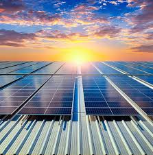
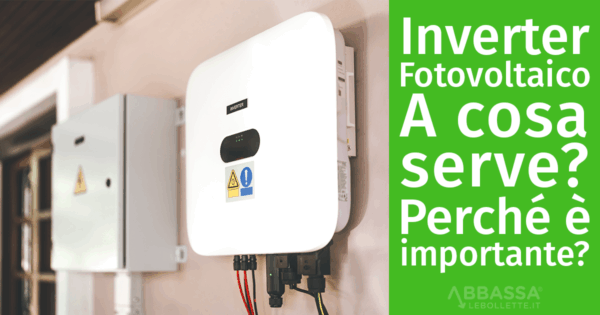
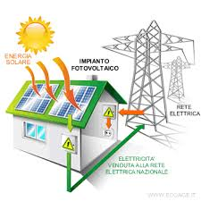
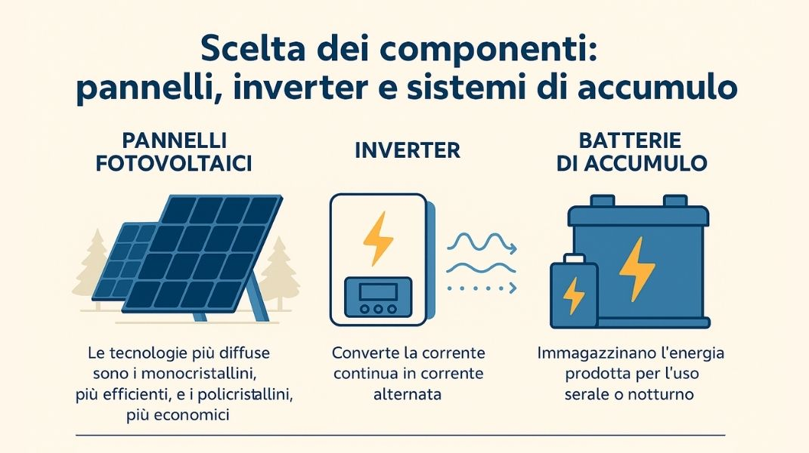

La produzione di energia da fonti rinnovabili, come eolico, idroelettrico e biomassa, è il pilastro della sostenibilità moderna per la sua capacità di abbattere le emissioni di gas serra. In questo panorama, l'energia solare fotovoltaica si distingue come una delle tecnologie più in crescita, grazie alla sua capacità di trasformare direttamente la luce solare in elettricità in modo pulito ed efficiente.
Un impianto fotovoltaico è un sistema basato su celle di materiali semiconduttori (solitamente silicio) che sfruttano l'effetto fotovoltaico per liberare elettroni e generare corrente. I componenti essenziali includono:
Il processo inizia con l'assorbimento dei fotoni da parte delle celle, che genera una corrente continua. L'inverter la stabilizza e la converte per renderla utilizzabile. L'elettricità prodotta può essere consumata immediatamente, immessa nella rete elettrica locale (scambio sul posto) o, in alternativa, immagazzinata in appositi sistemi di accumulo (batterie) per essere utilizzata di notte o quando il cielo è nuvoloso.
Esistono diverse configurazioni in base alle necessità: